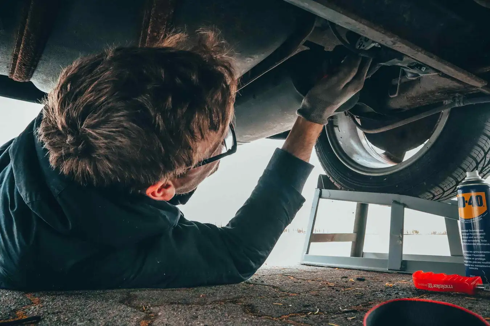
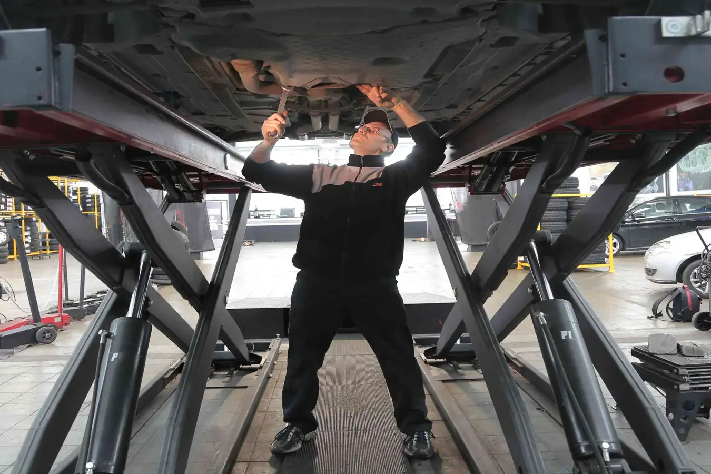

BENGKEL PUTRA PRIMA KEDOYA
Service Besar
Servis besar mobil berbeda dengan servis ringan. Biasanya pada servis ringan hanya meliputi pada pergantian oli, filter oli, hingga pembersihan pada filter udara. Namun pada servis besar, dilakukan pemeriksaan dan pergantian komponen-komponen lain yang kondisinya sudah tak bagus secara menyeluruh. Servis ini bertujuan agar kondisi mobil dapat terus berjalan dengan prima. Karena biasanya mobil cenderung akan menurun performanya seiring berjalannya waktu penggunaan.
- Pengecekan Busi dan kabel pada busi.
- Pembersihan pada intake manifold.
- Penggantian oli mulai dari oli mesin, oli gardan, hingga oli transmisi.
- Pengecekan Sistem EFI, untuk membuat sistem pembakaran bahan bakar berjalan lebih maksimal.
- Penggantian Fuel Filter.
- Pemeriksaan baut-baut pada mobil.
- Engine Tune-up, hal ini dilakukan untuk memaksimalkan performa mesin agar tetap optimal seperti baru..
- Pemeriksaan sistem kelistrikan pada mobil.
- Pembersihan filter udara.
- Melihat kondisi sistem bahan bakar.
- Penyetelan klep pada mobil yang klep-nya masih manual

